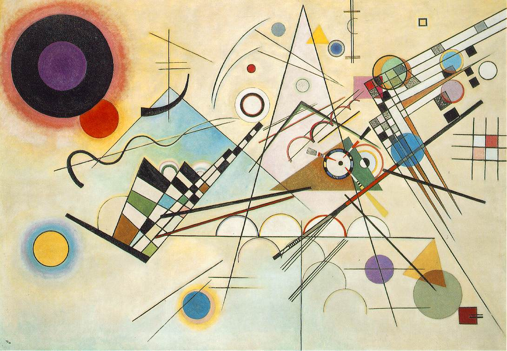

O Abstracionismo é um movimento artístico que não representa a realidade de forma direta. Em vez disso, utiliza cores, formas e linhas para expressar sentimentos, ideias e emoções.

Composição VIII
Wassily Kandinsky
Uma obra marcada por formas geométricas e cores vibrantes, considerada um dos maiores exemplos da arte abstrata.

Amarelo, Vermelho e Azul
Wassily Kandinsky
A pintura explora o uso das cores primárias e formas simples para criar uma composição equilibrada e expressiva.